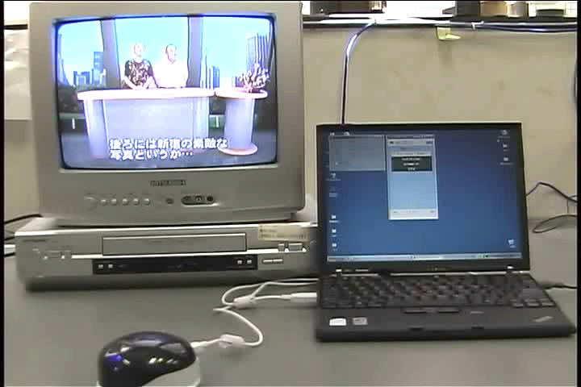

かならずお読みください→
音声認識、手作りのススメ
第4回 音声認識環境制御装置の作り方
はじめに
昔のテレビにはリモコンなんてありませんでした。寒い日にこたつに入って家族団らんしていても、誰がこたつを出てチャンネルを変えに行くかでもめたりしました。こんな笑い話もわかるのはもうある年齢以上の人だけ、そんな昔話になりました。リモコンができてとても便利になりました。でも同時に横着者がずいぶん増えたようです。結局、便利さとは何か？…こんなもののようです。
お身体に不自由を抱えて在宅生活をする人が、身の回りの家電製品を自分で操作できるかできないかで生活の便利さは随分違いがでてきます。なかには小さなボタンひとつがうまくいかない人もおられます。誰か呼んでやってもらうのもいいですが、たびたびとなると気が引けます、困ります。
「ああああーーー 不便だ」
不便さとは何か？…こんなもののようです。こんな日常の不便やいらいらがあると、ＱＯＬはぐんぐん下がってしまいます。環境制御装置は、このような問題を解決する目的でつくられました。お使いになる人のお体や生活の状態に合わせて、わずかな力でうごくセンサーやスイッチなどを使って身の回りの家電製品を操作できるようにすることがこの装置の目的です。
一見するとただのちょっと変わった、ちょっと大げさなリモコンですが、介護負担の軽減、ＱＯＬの向上、お使いになる人の自立を図るなどの目的もあります。
環境制御装置の普及
環境制御装置は商品化されてから既に長い年月たちますが、普及はそれほど進んでいません。その理由は次のように考えられます。
１ 高価で、購入補助の制度が少なく経済的負担が大きいこと
環境制御装置の目的と効果は関係者間では広く認められているところです。しかし、数万円から数十万円といった幅広い価格帯にいくつか商品がみうけられます（AT2EDでは、これら機器の情報を閲覧できます。（http://at2ed.jp/））が、高機能で高価な機器をその人、そのご家族が今後も必要とされるかと考えると、導入をあきらめる場合も少なくはありません。また、公的補助制度も一部の自治体に限られ、制度が整備された意思伝達装置（コミュニケーションエイド）とは普及の面で大きな違いが存在しています。２ メンテナンスなど維持管理
機器の故障や不具合の他に、家電製品の買い替えの際にも環境制御装置の設定変更が必要になります。これらの作業は確認のために、現地（お使いになる方のお家）での作業が必要になりますので出張作業となるとコストがかさみます。このように維持し使い続けるための負担もあります。３ 機器の存在を知る機会がない
患者さんやご家族に環境制御装置を文書や資料で説明し、これで生活がどう変わるかを理解してもらうのはなかなか容易ではありません。また入院中に体験してもらうのもタイミング的によいですが、病室にはそれほど家電製品がありません。また患者さんもご家族も在宅生活がある程度軌道に乗らないと、あれこれやりたいことに思いが至らないこともよくあります。このように環境制御装置は知る機会も、体験する機会も作りにくい道具です。このほか、『テレビのチャンネルを変えるくらい家族がやるからそんな道具はいらない』というご意見もよく耳にします。コミュニケーションエイドの必要性が周囲に広く認められやすいのと対照的に環境制御装置は必要性や効果が認識し理解されにくいことがよくあります。しかし『環境制御装置がなかったら今の自分は想像できない』などと高く評価するひともいます。このように評価が大きく分かれるところも環境制御装置の特徴です。また、このような福祉機器を開発、販売する関係者は以下のような問題に直面します。
まず販売数が限られるため単価を高くしないと採算がくるしくなります。価格が高いので販売がなかなかのびません。売れないので広く知られにくくなります。人材をそろえたり、デモ機の貸出、積極的に広告なども難しくなります。収益がでないので改良もモデルチェンジも思うようにすすまなくなります。この結果、だんだん経営の負担になってきます。さらに商品の性格上、生産中止、事業撤退などに際してさまざまな困難、心情的苦悩が伴うことがあります。概略、以上のようにな悪循環に入りがちになります。これがモノ自体は必要とされるのに、ビジネスとして成立しにくいという困った状況です。
音声認識環境制御装置の作り方かつては環境制御装置を作るのは簡単な仕事ではありませんでした。企画、設計、部品調達、組立のどれも高い専門性が要求されました。さらに量産、流通、販売、メンテナンスさらには公的な基準をパスする必要がある場合はもはや個人の手にはおえない『事業』となり、会社などの組織力なしでは歯がたちませんでした。このため人件 費、材料費をはじめとした組織運営のためのコストがかかり、これを賄うために大量生産大量販売で収益をあげなくてはならなくなるわけです。ここでもしその製品の販売が思わしくないときには、先に述べた困った状況になるわけです。会社に限らず行政でも、多くの人を対象とした活動を能率的に行うための組織ですので、環境制御装置など規模が小さい仕事では効率を維持しにくい特徴もあるようです。
大量の需要が見込めない場合、またはその必要がない場合にはそれなりの別のやり方があります。街の工務店が注文住宅を建てる際には、施主の要望や好みを盛りこんで間取りを設計します。ここに浴室、洗面、流し台など大量生産のユニットを組み込んだり、既製品にいくらか手を加えることでコストが下げるように工夫します。このように注文住宅でも部品全てが手作りというわけではなく、量産品との組み合わせなど工夫して差別化と低コストの両立を図っているのです。そのため、住宅設備会社のショールームは比較的近い場所に集まっていて顧客が見て回りやすくしているのだそうです。このような流通事情が活発だからこそ、このような多品種少量生産が可能になるのです。
豊富なよい食材とレシピが手に入り、料理好きがいて、さらに喜んで食べてくれる人がそろうなら、そこに豊かな食卓が現れるでしょう。材料や工具と、腕に覚えのある人がそろうと、よい日曜大工ができるでしょう。これらの例のように、材料、技能、ニーズの3つがポイントになります。
最近、環境制御装置に関係するユニットや部品が徐々に一般人にも手が届くようになってきました。関係する技能もインターネットを通じて、一般にも届く時代になりました。さらにかつては非常に貴重だったパーソナルコンピュータも普及が進み、今では特に珍しくないありふれた道具になりました。実はパソコンはワープロや電子メールのほかにも広く利用できる大した道具なのです。このように必要な材料や道具は手に入りやすく、情報はネット上にあり、やろうと思えばできる時代になりました。あとはレシピが必要です。これを提供するのがこの文章の目的です。
音声認識環境制御装置の手作り
音声認識、手作りのススメは今回で4回目です。これまで紹介してきた方法を応用して音声で操作する環境制御装置を作ります。まず今回紹介する音声認識環境制御装置をごらんください。下の写真をクリックすると動画（6MB）のダウンロードが始まります。

この音声認識環境制御装置が手作りでできます。
材料の選び方
家電製品のリモコンは、モールス信号のようなものを目に見えない赤外線で送信して動かしています。ホームセンターなどで売っている学習リモコンはこの赤外線信号をコピーして同じ信号を送信しているのです。環境制御装置にもこのような赤外線送信装置が必要です。
これまで、市販されているパソコンから制御できる赤外線リモコンは３種類あるようです。
１ ハル・コーポレーション、スギヤマエレクトロン クロッサム２＋USB（生産中止）
２ バッファロー社の Remote Station PC-OP-RS1 玄人志向へのOEMもあり
３ テクノツール社のなんでもIRこのほか、リコモン工作キットもあるようですが、ここでは取り上げません。
このうち、１は実に残念な状況になっています。また２は、赤外線信号の到達距離が極端に短く、通常の用途には適していません。
そして３は、やや割高ですが伝の心にも使われいて性能も十分で入手も容易です。また家電製品各社のリモコンデータもテクノツール社のサイトから入手できるところが心強いです。また付属のアプリケーション、なんでもIRセンターをインストールすると、マウス操作で家電製品を操作できるようになります。更に、なんでもIRアシスタントをダウンロードしてインストールすると障害をお持ちの方のために開発されたさまざま機能をつかえるようになります。以上のような理由で、なんでもIRを使うことにしました。注意：なんでもIRは、 Windows XP, Vista は32bit版のみの対応となります。 Windows７、８，８．１にも対応しています。
これらの設定は、取扱説明書をごらんください。
例１ テレビのみ操作する場合
ここでは、あらかじめリモコンリストの2番目にお使いのテレビのリモコンが登録されていて、さらに「なんでもIRアシスタント」がインストールされているものとして説明をいたします。リモコン登録の方法はなんでもIRの取り扱い説明書をごらんください。
さらに、なんでもIRアシスタントをマウスで操作し、正常に動作することを事前に確認してください。ここからはテレビを例に必要なコマンド（命令）を考えてみましょう。
まず、電源です。ただし多くのテレビでは、ONとOFFが同じボタンです。つまり同じコマンドで、ONとOFFの両方が実行できますので、これを音声認識で行う場合も音声コマンド（コマンド＝命令）ひとつで電源のONOFF操作ができます。
次に、チャンネルです。数字（チャンネルの番号＝放送局）で選ぶほか、上げ下げで選ぶ方法もあります。
数字ではコマンドの数が多くなりますが、上げ下げなら、2個のコマンドで実現できます。またどちらか片方だけでも循環しますので手間は多少かかりますがコマンドは一つでも実用にはなります。どの方法を選ぶかを決める基準は、お使いになる方の好みや身体能力や疲労やその他の事情です。何行か上で『考えてみましょう』と書きましたが、考えるべきはお使いになる方のことです。考えても決められないときには、仮の物を作って試してみる事もできます。手間はかかりますが納得できるまで試みることができます。次に音量です。これも上げ下げでコマンドは２つ必要です。循環しませんのでチャンネルのように一つすませるわけには行きません。もし都合があるなら音量は別途調整しておき、調整せずにそのま使うのでもいいかもしれません。使う人が納得すれば簡略化するのもよろしいと思います。
ここからさきは、テレビの操作を電源で１つ、チャンネルで１つ、音量で２つのコマンドを使うことにします。
そして、電源の音声コマンドは、「電源」、チャンネルの音声コマンドは、「チャンネル」、音量大きく/小さくの音声コマンドは、「音大きく」/「音小さく」としましょう。
この他、リモコンソフト「なんでもIRアシスタント」の起動を、「なんでもIR」で、テレビ操作への切り替えを「テレビ」で行うことにします。
合計6つの音声コマンドを使います。
これを実現する、グラマファイルは以下のようになります。
/なんでもＩＲ/なんでもあいあある/ナンデモアイアール;
/テレビ/てれび/テレビ;
/電源/でんげん/デンゲン;
/音大きく/おとおおきく/オトオオキク;
/音小さく/おとちいさく/オトチイサク;
/チャンネル/ちゃんねる/チャンネル;
説明
2-6行目 音声認識言語は日本語で、規則の名前は"IRControl"、参照名は"IR"といった設定をしています。
7-16行目 6種類の音声コマンドを表示しています。<PVAL="">は戻り値を指定します。認識されるとこの値が戻されます。次が戻される文字列です。これも表示されます。次が認識する目標の文字列です。ひらがなとカタカナで表記します。これらと一致すると認識された事になります。
3番目の例では、「でんげん」あるいは「デンゲン」と認識されると、文字列「電源」と値3が戻されます。（余談ここで、複数の言葉で同じ戻り値を設定しても問題ありません。どちらの言葉でも同じ動作をすることになります。）
17行目はグラマファイルの最後を示します。
これを受ける Form1のコードの例として
Public Class Form1 Inherits System.Windows.Forms.Form #Region " Windows フォーム デザイナで生成されたコード " 注＝この間、長いので省略しました。 #End Region Dim WithEvents Speech As SKSpeechLib.SKSpeech Private Sub SKSpeechRecognitionEventHandler(ByVal sender As Object, _ ByVal e As SKSpeechLib.SKSpeechEventArgs) _ Handles Speech.Recognition Label4.Text = "" Label6.Text = "" Label8.Text = e.RuleName Label3.Text = e.values(0).ToString Label5.Text = e.Words(0) Label9.Text = e.ItemName(0) If e.RecoCount > 1 Then Label4.Text = e.values(1).ToString Label6.Text = e.Words(1) Label10.Text = e.ItemName(1) End If If e.values(0) = 1 Then Call Nandemo() End If If e.values(0) = 2 Then SendKeys.SendWait("%2") End If If e.values(0) = 3 Then SendKeys.SendWait("%q") End If If e.values(0) = 4 Then SendKeys.SendWait("%o") End If If e.values(0) = 5 Then SendKeys.SendWait("%p") End If If e.values(0) = 6 Then SendKeys.SendWait("%y") End If End Sub Private Sub Form1_Load(ByVal sender As System.Object, ByVal e As System.EventArgs) Handles MyBase.Load Speech = New SKSpeechLib.SKSpeech("SpeechGrammer.xml") Speech.Enabled = True CheckBox1.Checked = Speech.Enabled End Sub Private Sub CheckBox1_CheckedChanged(ByVal sender As System.Object, ByVal e As System.EventArgs) Handles CheckBox1.CheckedChanged Speech.Enabled = CheckBox1.Checked End Sub Private Sub Nandemo() Dim rc As Integer rc = Shell("C:\ttools\なんでもIRアシスタント\IRAssistant.exe", AppWinStyle.NormalFocus) End Sub End Class説明
今回も、kilalaさんの音声認識ライブラリのサンプルに改造を加えました。サンプルと改造についての説明は前回までに行いましたので省略します。
28行目から45行目に示した追加部分では、音声認識の結果の戻り値（＝e.values(0)）に対応した作業が書かれています。『なんでもIR』と発声すると、音声認識ライブラリから、１が戻されます、上記のForm１は、戻り値が１のときはなんでもIRアシスタントを起動します。59行目から62行目でなんでもIRアシスタントを起動しています。
『テレビ』と発声で、戻り値が2の時は、なんでもIRアシスタントに、Alt+2（Altキーと２キーの同時押下 コードではAltを％で表記）を送りテレビリモコンを開きます。3の時は、なんでもIRアシスタントにAlt+qを送り、なんでもIRから『電源』の信号がテレビに向けて発信されます。以下それぞれの発声から音声認識の戻り値、戻り値を判定してなんでもIRアシスタントにキー操作を送り、なんでもIRがリモコンの赤外線信号を発信する、これを受けた家電製品が所定の動作をするという一連の動作が行われます。
以上が、例1 テレビのみ操作する場合です。前回の音声認識、手作りのススメではプレゼンテーションソフトを声で操作する事例について説明しました。今回の例がよくお分かりにならない場合には、前回の事例のほうが若干シンプルですのであわせてご覧になってください。例２ テレビとビデオを操作する場合
続いて、複数の家電製品を操作するためのグラマファイルについて考えてみます。ここではテレビとビデオを例にします。家電製品が増えてくるといろいろ困ることがあります。例えばテレビとビデオの両方に「電源」がありますが、これらを使い分けるためには、別の言葉で両方を区別しなくてはなりません。このように家電製品が増えてくると、コマンドの言葉が増えて混乱の度合いが増してきます。たくさんの機能を利用しようとすると、使う人間の記憶力に負担がかかります。
ここでは、このような欠点を軽減するため、テレビの音声コマンドのまえに「テレビ」と発声し、ビデオの音声コマンドのまえに「ビデオ」と発声することにします。ここで使用するグラマファイルは以下のとおりです。
/なんでもＩＲ/なんでもあいあある/ナンデモアイアール;
/テレビ/てれび/テレビ;
/電源/でんげん/デンゲン;
/音大/おとおおきく/オトオオキク;
/音小/おとちいさく/オトチイサク;
/チャンネル上/ちゃんねるあげ/チャンネルアゲ;
/チャンネル下/ちゃんねるさげ/チャンネルサゲ;
/入力切替/きりかえ/キリカエ;
/ビデオ/びでお/ビデオ;
/電源/でんげん/デンゲン;
/再生/さいせい/サイセイ;
/停止/ていし/テイシ;
/早送/はやおくり/ハヤオクリ;
/巻戻/まきもどし/マキモドシ;
/一時停止/いちじ/イチジ;
説明
例1 では、ひとつにまとまっていた、テレビとなんでもIRアシスタントの操作を分けて、これにビデオの部分を付け足した様なかたちになっています。またテレビのコマンドに、チャンネルの上げ下げを加え、ビデオ操作に入力切り替えのコマンドも追加しました。またビデオのコマンドとして、電源、再生、停止、早送、巻戻、一時停止を設けました。この例では、『テレビ』の発声で、戻り値100が『電源』の発声で、戻り値10が戻されます。『ビデオ』『再生』で、200と11が戻されます。つまり、今回の例２では２つの戻り値を使っています。
一台の家電製品で、<RULE NAME="****" >から</RULE>までの行を使いますので、さらに家電製品の数を増やすごとに、この部分を追加していくことになります。さて、例2で使用する、Form1のコードは次のようになります。
Public Class Form1 Inherits System.Windows.Forms.Form #Region " Windows フォーム デザイナで生成されたコード " ＝＝この部分は、省略しました。＝＝ #End Region Dim WithEvents Speech As SKSpeechLib.SKSpeech Private Sub SKSpeechRecognitionEventHandler(ByVal sender As Object, _ ByVal e As SKSpeechLib.SKSpeechEventArgs) _ Handles Speech.Recognition Dim waitt As Integer waitt = 1200 Label4.Text = "" Label6.Text = "" Label8.Text = e.RuleName Label3.Text = e.values(0).ToString Label5.Text = e.Words(0) Label9.Text = e.ItemName(0) If e.RecoCount > 1 Then Label4.Text = e.values(1).ToString Label6.Text = e.Words(1) Label10.Text = e.ItemName(1) End If If e.values(0) = 1 Then Call Nandemo() End If If e.values(0) = 100 And e.values(1) = 10 Then 'テレビー電源 SendKeys.SendWait("%2") System.Threading.Thread.Sleep(waitt) SendKeys.SendWait("%q") System.Threading.Thread.Sleep(waitt) SendKeys.SendWait("%z") End If If e.values(0) = 100 And e.values(1) = 11 Then 'テレビー音大 SendKeys.SendWait("%2") System.Threading.Thread.Sleep(waitt) SendKeys.SendWait("%o") System.Threading.Thread.Sleep(waitt) SendKeys.SendWait("%z") End If If e.values(0) = 100 And e.values(1) = 12 Then 'テレビー音小 SendKeys.SendWait("%2") System.Threading.Thread.Sleep(waitt) SendKeys.SendWait("%p") System.Threading.Thread.Sleep(waitt) SendKeys.SendWait("%z") End If If e.values(0) = 100 And e.values(1) = 13 Then 'テレビーｃｈ上 SendKeys.SendWait("%2") System.Threading.Thread.Sleep(waitt) SendKeys.SendWait("%y") System.Threading.Thread.Sleep(waitt) SendKeys.SendWait("%z") End If If e.values(0) = 100 And e.values(1) = 14 Then 'テレビーｃｈ下 SendKeys.SendWait("%2") System.Threading.Thread.Sleep(waitt) SendKeys.SendWait("%u") System.Threading.Thread.Sleep(waitt) SendKeys.SendWait("%z") End If If e.values(0) = 100 And e.values(1) = 15 Then 'テレビー入力切替 SendKeys.SendWait("%2") System.Threading.Thread.Sleep(waitt) SendKeys.SendWait("%w") System.Threading.Thread.Sleep(waitt) SendKeys.SendWait("%z") End If If e.values(0) = 200 And e.values(1) = 10 Then 'ビデオー電源 SendKeys.SendWait("%3") System.Threading.Thread.Sleep(waitt) SendKeys.SendWait("%q") System.Threading.Thread.Sleep(waitt) SendKeys.SendWait("%z") End If If e.values(0) = 200 And e.values(1) = 11 Then 'ビデオー再生 SendKeys.SendWait("%3") System.Threading.Thread.Sleep(waitt) SendKeys.SendWait("%r") System.Threading.Thread.Sleep(waitt) SendKeys.SendWait("%z") End If If e.values(0) = 200 And e.values(1) = 12 Then 'ビデオー停止 SendKeys.SendWait("%3") System.Threading.Thread.Sleep(waitt) SendKeys.SendWait("%t") System.Threading.Thread.Sleep(waitt) SendKeys.SendWait("%z") End If If e.values(0) = 200 And e.values(1) = 13 Then 'ビデオー早送 SendKeys.SendWait("%3") System.Threading.Thread.Sleep(waitt) SendKeys.SendWait("%i") System.Threading.Thread.Sleep(waitt) SendKeys.SendWait("%z") End If If e.values(0) = 200 And e.values(1) = 14 Then 'ビデオー巻戻 SendKeys.SendWait("%3") System.Threading.Thread.Sleep(waitt) SendKeys.SendWait("%u") System.Threading.Thread.Sleep(waitt) SendKeys.SendWait("%z") End If If e.values(0) = 200 And e.values(1) = 15 Then 'ビデオー一時停止 SendKeys.SendWait("%3") System.Threading.Thread.Sleep(waitt) SendKeys.SendWait("%y") System.Threading.Thread.Sleep(waitt) SendKeys.SendWait("%z") End If End Sub Private Sub Form1_Load(ByVal sender As System.Object, ByVal e As System.EventArgs) Handles MyBase.Load Speech = New SKSpeechLib.SKSpeech("SpeechGrammer.xml") Speech.Enabled = True CheckBox1.Checked = Speech.Enabled End Sub Private Sub CheckBox1_CheckedChanged(ByVal sender As System.Object, ByVal e As System.EventArgs) Handles CheckBox1.CheckedChanged Speech.Enabled = CheckBox1.Checked End Sub Private Sub Nandemo() Dim rc As Integer rc = Shell("C:\ttools\なんでもIRアシスタント\IRAssistant.exe", AppWinStyle.NormalFocus) End Sub End Class説明
こちらもいろいろと複雑になっています。複数の家電製品を使い分けるためにはいくつかの工夫が必要です。どのリモコンのどのコマンドがどんな順番で発声されても対応できるようにするため、発声したらなんでもIRアシスタントのリモコン画面を切り替え、リモコン信号を送信したあと、画面を元にもどして次のコマンドに備える必要があります。
具体的に今回の例では、ビデオのコマンドとビデオのコマンドが順不同で発声されることを想定し、リモコンリスト画面からそれぞれのリモコン画面に切り替えコマンドを送信したあと、次に備えてリモコンリスト画面に戻すことにしました。この切り替え作業にやや時間がかかります。このため待ち時間、waittを1200msec（設定は15行目参照）にして、キー送信の間に、
System.Threading.Thread.Sleep(waitt)
として入れています。このためやや長々しくなっています。waittの値はお使いになるパソコンに合わせて別途調整が必要になるかもしれません。このページのはじめの方にある動画は、上の条件で動かしたものです。手品のようにみえるものでも、このような仕組みがわかれば理解でき、新しいアイデアを思いつくこともできるでしょう。
音声認識環境制御装置のまとめ今回紹介しました音声で操作する環境制御装置が実現するには2つの助けが必要でした。ひとつはkilalaさんがお作りになった音声認識ライブラリ、もうひとつは、テクノツール社のなんでもIRです。この2つがあったからこそ、今回のような音声認識環境制御装置が手作り出来ました。ここに深く感謝いたしたいと思います。またこれらはともに道具としての機能と同時に、優れた汎用性を持っているという特徴があります。なんでもIRは、伝の心のリモコン装置として採用されているためにその一部と考えられがちですが、単独で購入可能でほかのソフトとの組み合わせて使う応用しやすさも併せ持っています。kilalaさんの音声認識ライブラリの汎用性はこのシリーズをお読みいただいた方には十分ご理解いただけたものと思います。
福祉機器を手がけられている方々には熱い意気込みをお持ちの方が多く強く感動を受けるのですが、経営面での苦労話も同様に多くお聞きします。福祉機器を必要とされている方々は比較的多くありませんので、この方面のご苦労は察してあまりあるところです。しかしこのような会社、人、道具にこそなんとか生き延びて欲しい、そしてあとに続く人々が現れて欲しいと考えています。そのためには、福祉機器を必要としていない人にも買って使って楽しんでもらえる工夫が必要ではないかと考えています。必要としない人も使っているそんな道具を、必要な人も使う。そんな状態を目標にする活動が求められていると考えています。
本来、環境制御装置は何らかの不便不自由を抱えて生活している人の手伝いをする道具と考えられ、私もそう考えていました。しかしこの取り組みに際して調査しましたら、福祉機器とは関係ない立場で、音声でリモコンを動かすことに興味を持ち、開発に取り組んでいる人々をあちこちにみかけました。このように自分の身近でSF的な道具を持って未来的な生活に使うというのは、趣味としても悪くはありません。かく言う私も好きです。福祉機器の価格としては高く思えますが、特殊なパソコン出力装置で趣味に使うと思えばそれほど高く思えません。有益な道具にはなんとしても生き残って欲しい思います。
『いかにも不自由な人専用の道具っていうのがいやなんだよね』
この気持ちもよくわかります。こころのどこかにひっかかりますよね。多分、境界がいやらしいんですね。
音声認識の学習リモコンの作り方はここにあります。
2013/12/20 公開研究企画課リハ工学科にもどる